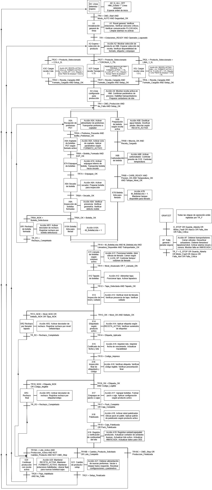
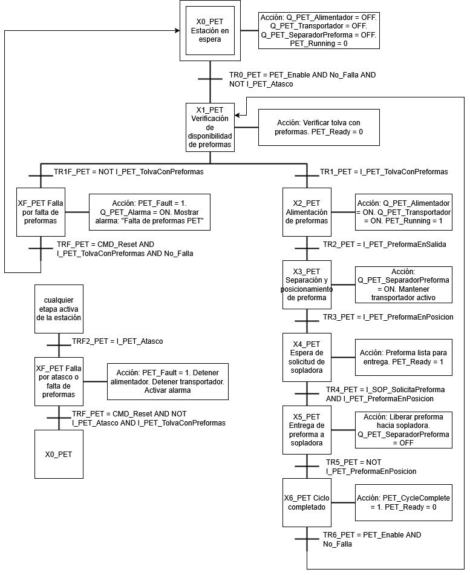
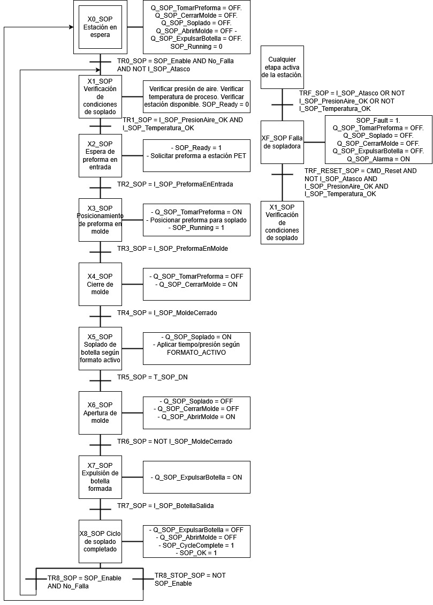
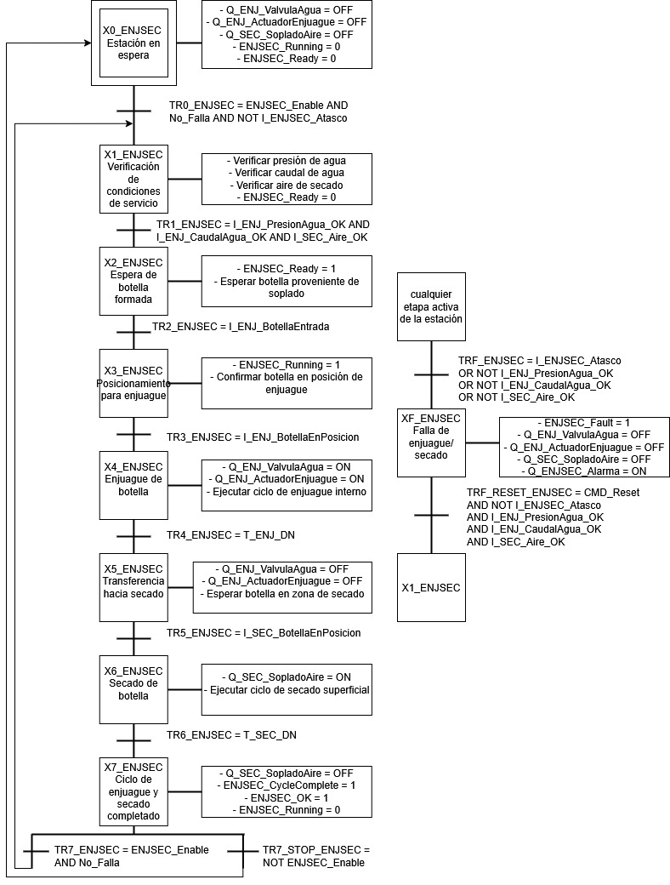
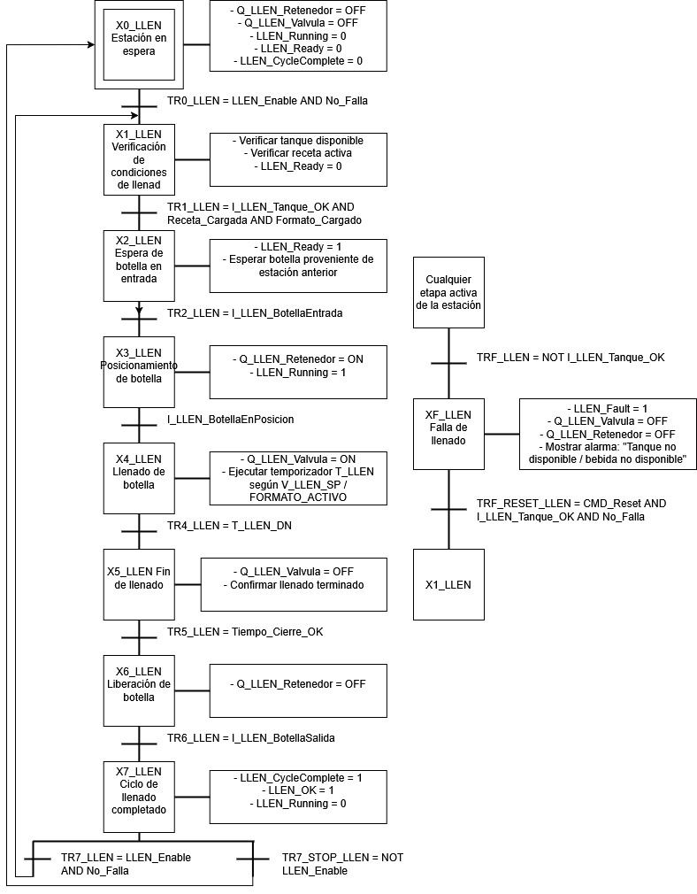
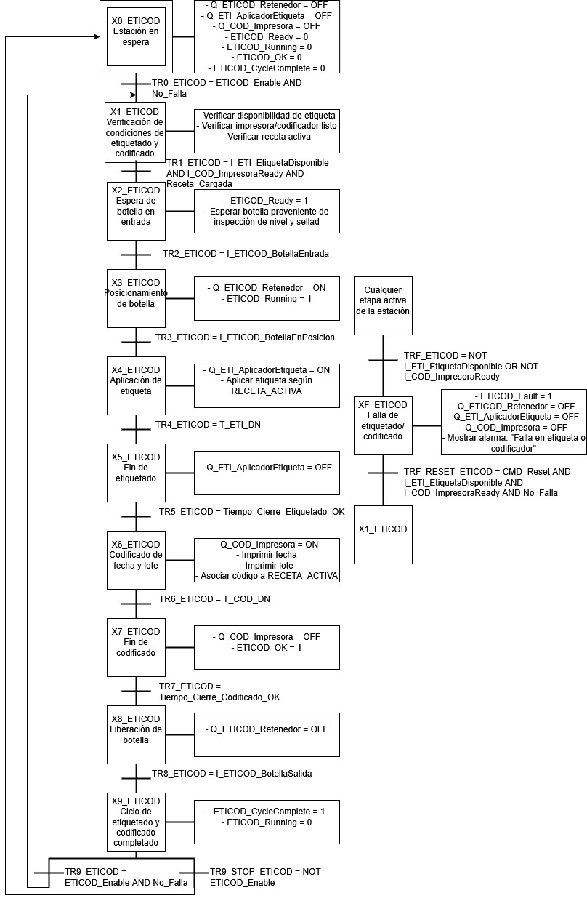

Este módulo aborda los fundamentos de la automatización discreta mediante Controladores Lógicos Programables (PLC) y sistemas SCADA, integrando aspectos de programación, supervisión, comunicación industrial y evaluación económica de proyectos de automatización. Los recursos presentados permiten comprender el proceso completo, desde el diseño del sistema de control hasta su implementación en un entorno industrial, favoreciendo la interoperabilidad entre equipos, la adquisición de datos y la supervisión eficiente de los procesos productivos.
El sistema de control fue desarrollado en Studio 5000 mediante una arquitectura modular basada en una rutina maestra, rutinas por estación, manejo de fallas, registro de producción y comunicación con sistemas externos. A continuación se presentan los principales documentos y diagramas desarrollados durante el proyecto.
La filosofía de control define la arquitectura general del sistema de automatización implementado para la línea de producción de bebidas carbonatadas. El PLC Allen-Bradley, programado en Studio 5000, actúa como controlador principal, coordinando las diferentes estaciones, administrando las recetas de producción, supervisando los enclavamientos de seguridad y gestionando la comunicación con las plataformas de simulación y supervisión. La estrategia de control se basa en un GRAFCET maestro implementado en lenguaje Ladder, favoreciendo una estructura modular, escalable y de fácil mantenimiento.
Ver documento completoLa narrativa de control describe la secuencia completa de operación de la línea automatizada, desde la inicialización del PLC hasta el embalaje final del pallet. Durante el proceso se coordinan las estaciones de llenado, tapado, inspección, etiquetado, formación de sixpacks, paletizado robotizado y embalaje, además del manejo de fallas, registro de producción e integración con los sistemas SCADA y MES.
Ver documento completo







Como resultado del desarrollo del sistema de control, Studio 5000 genera un reporte completo del proyecto en formato PDF. Este documento reúne la estructura del programa implementado en el PLC, incluyendo las rutinas desarrolladas en lenguaje Ladder, la organización del proyecto, los programas y tareas, así como la totalidad de las variables (tags) utilizadas durante la implementación. El reporte constituye la documentación técnica del controlador y facilita la revisión, mantenimiento y validación de la lógica de control desarrollada para la línea automatizada de producción.
Como aplicación práctica de los conceptos desarrollados en el módulo, se implementó un sistema SCADA utilizando Node-RED, integrando la información proveniente del sistema de automatización y permitiendo la visualización del estado de la línea de producción en tiempo real. La solución incorpora herramientas de comunicación industrial, adquisición de datos e interfaces gráficas para facilitar la supervisión del proceso y la interacción con los dispositivos de campo.